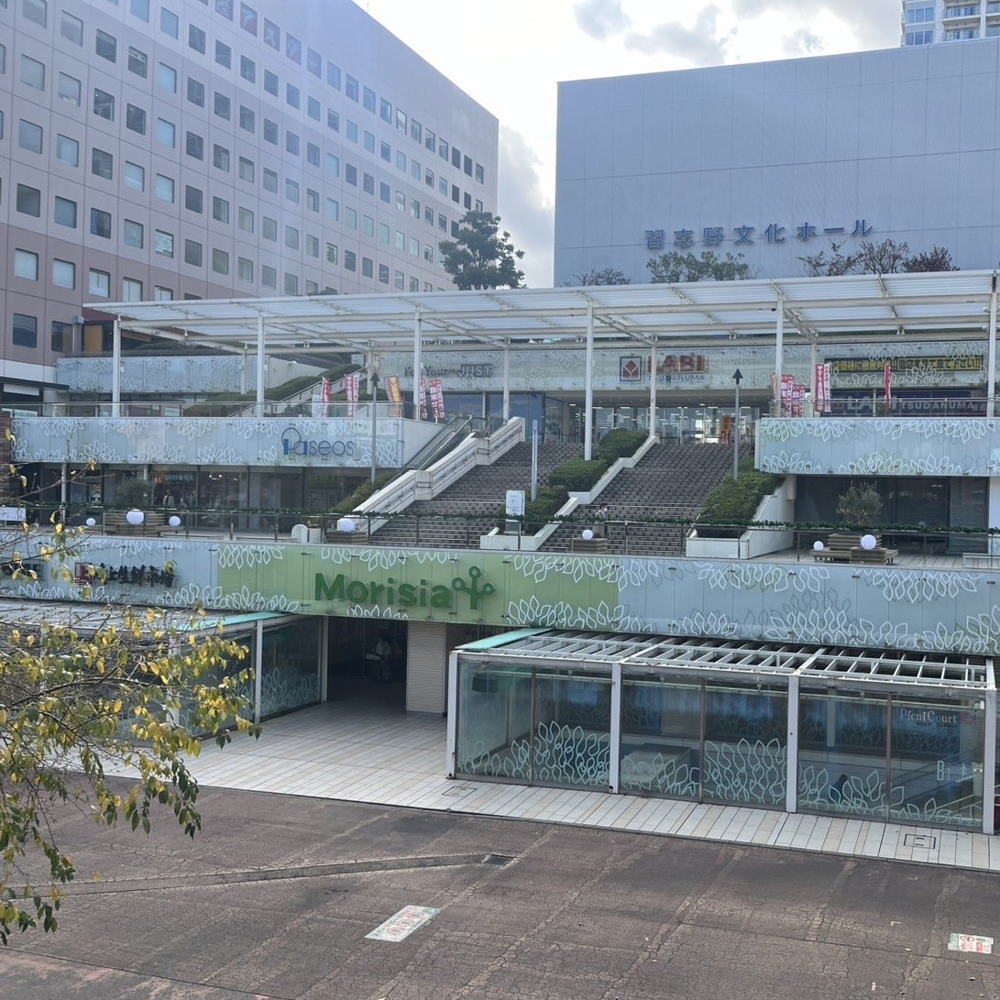
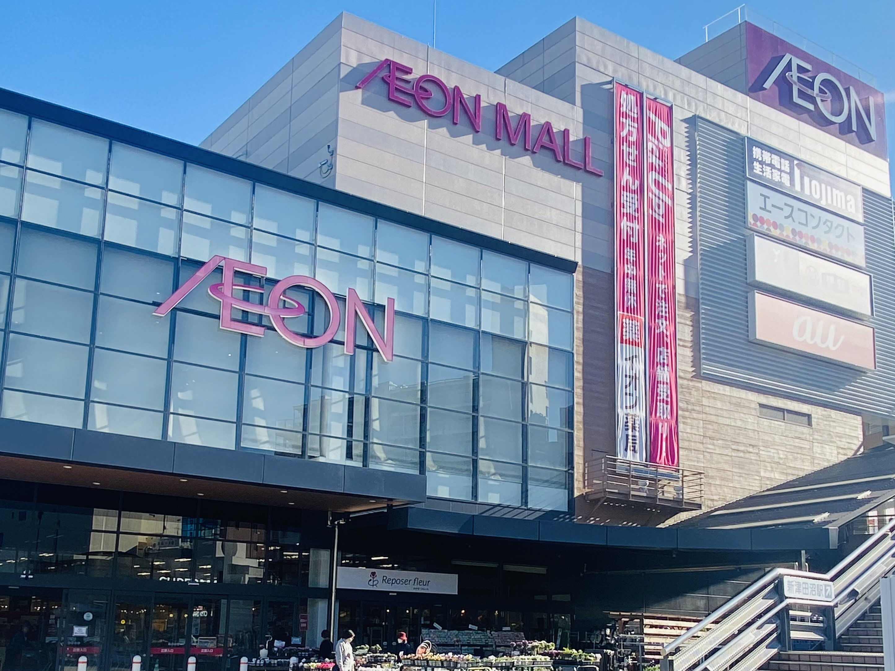
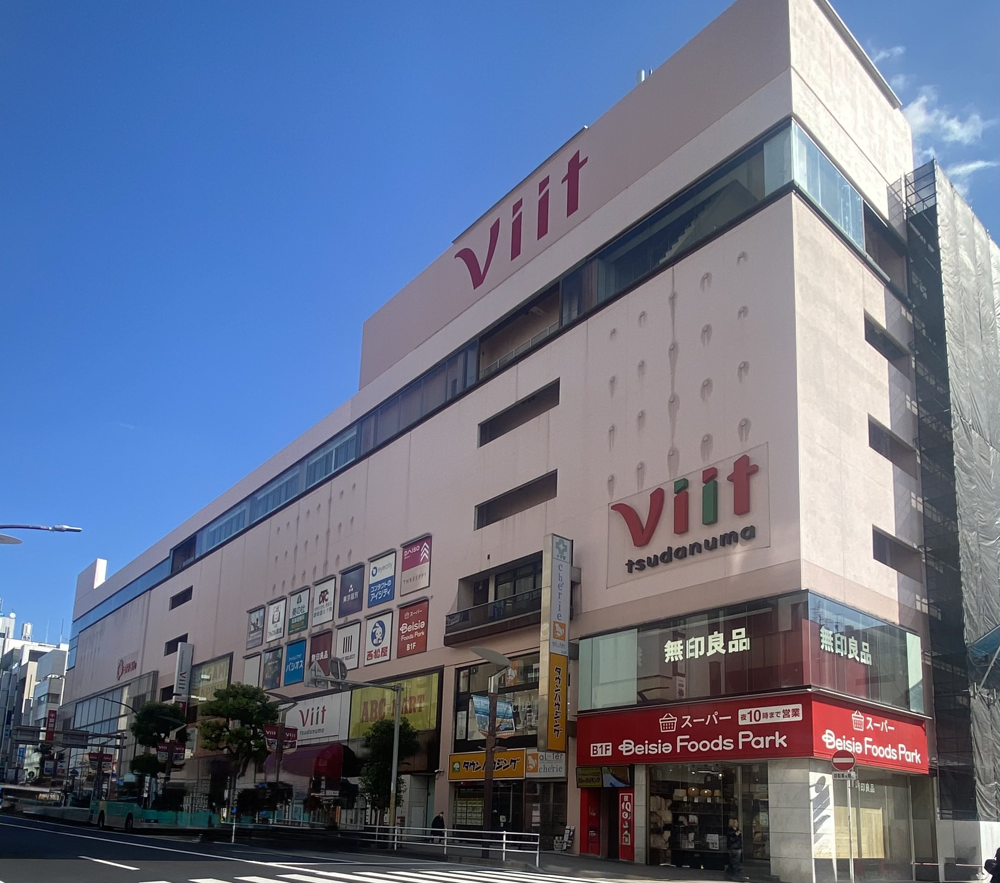

テナント数ランキング
1位: モリシア津田沼
2位: イオンモール津田沼
3位: 津田沼ビート
注目ポイント
順位をクリックすると公式サイトへ飛ぶことができます
-
1位：モリシア 津田沼

約100店舗あります。
モリシア前の広場では定期的にイベントも開催されています。店舗情報 営業時間 ショッピング：10:00~21:00
レストラン：11:00~22:00駐車場(地下) 24時間 駐車場(立体) 8:00~24:00 -
2位：イオンモール津田沼

ファッションやグルメを中心に約80店舗が揃う充実のショッピングモールです。
定期的に開催されるイベントも多彩で、地域の方に親しまれる憩いの場として幅広い年代の方々が利用しています。店舗情報 営業時間 イオンモール専門店街：10:00~21:00
フードガーデン：10:00~21:00
イオン津田沼店1F食料品売り場：24時間営業
1F・2F・3F ホームファッション・その他売り場：9:00~22:00駐車場(地下)・駐輪場 24時間 駐車場(立体) 7:00~22:00 -
3位：津田沼viit

2023年秋に開業したばかりの商業施設で、約40店舗が集結しています。
また、駅に近いため、アクセスも抜群で便利にご利用できます。店舗情報 営業時間 10:00~20:00 駐車場 約60台 8:00~23:30 駐輪場 自転車：71台/バイク：7台 24時間